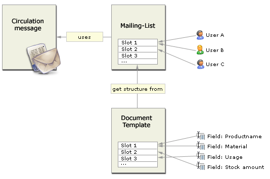

Concepts
General Structure of a circulation document
The Circulation messages of CuteFlow could have two types of content. You can attach files to the circulation message.
This files will be send as attachments to the user. Those documents could be used i.e. for illustrations or other describing material.
The other content part of a circulation message are the input fields. This fields will be shown in the receiver email message. The
receiver can enter the informations. After sending the circulation message to the next user this informations of the input fields
will be saved, so everybody who comes next in the mailing list would see the entered informations.
A circulation message is structured in "Slots". A slot can be for example a department (i.e. Construction, Sales...).
Every slot has assigned users and assigned input fields. The "User to Slot" relationship is defined with the so called
Mailing Lists in CuteFlow. A mailing list holds the information which user is the next station.
The "Slot to Input Field" relation is done by the Document templates. There you can assigning Fields to slots.

A user who gets the circulation message through email can only change values (input fields) that are in the same
Slot as himself.
This prevents that a user can overwrite informations which he is not allowed.
A user could occure in more than one Slot. This user is getting the circulation message as often as he is in the mailing list.